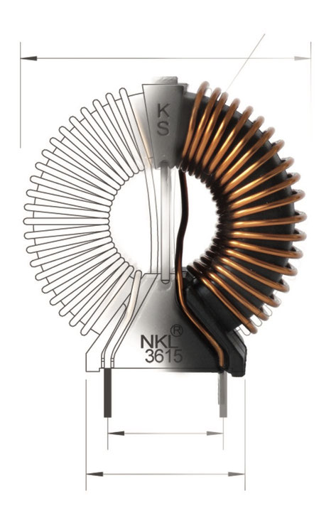
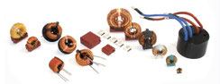
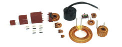
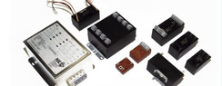
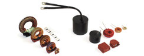
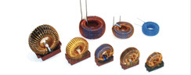
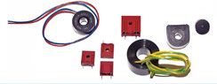
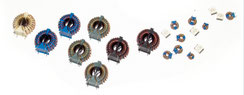
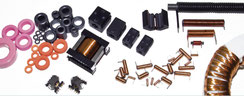

Ihr kompetenter EMV-Partner
Als einer der größten deutschen Hersteller von Ringkern-Drosseln für die Elektronik sind wir als kompetenter Ansprechpartner für die EMV bekannt!
Foto vom Firmengelände in Wolpertshausen – ein Hintergrundvideo folgt in Kürze.
Was uns auszeichnet
Einer der Hauptgründe unseres dauerhaften Erfolgs war und ist unsere technische Kompetenz im Bereich induktiver Bauelemente und EMV – beispielsweise durch die direkte Verbindung zwischen unserem firmeneigenen EMV-Labor, unserem hervorragend ausgestatteten Prüffeld und unserer Entwicklung.
Jede Drossel wird passend zur Anwendung ausgelegt – aus über 7.000 dokumentierten Produkt-Typen oder als kundenspezifische Neuentwicklung.

Kompetenz in EMV – von der Entwicklung bis zur Messung
Als Hersteller mit eigenem Messlabor begleiten wir unsere Kunden von der ersten Auslegung bis zur EMV-gerechten Serienlösung.
Geprüfte Qualität
Unsere Prozesse sind nach ISO 9001 zertifiziert. Jede Komponente durchläuft eine klar definierte Qualitätsprüfung.
Eigenes EMV-Messlabor
Störaussendung und Störfestigkeit prüfen wir im eigenen Haus – schnelle Rückmeldung, kurze Entwicklungszyklen.
Kundenspezifische Lösungen
Neben Standardbauformen entwickeln wir Sonderbauformen nach individueller Anforderung – von der Musterfertigung bis zur Serie.
EMV-Messung, Beratung und Schulung
Neben der Bauteilfertigung bieten wir das komplette Spektrum an EMV-Dienstleistungen – von der Einzelmessung bis zur entwicklungsbegleitenden Beratung.
Beratung und Schulung
Entwicklungsbegleitende Beratung und Seminare – auf Wunsch auch bei Ihnen im Haus.
Zur Beratung →Oberwellenmessung
Prüfung der Netzrückwirkungen (Oberschwingungen) nach EN 61000-3-2.
Zum Messlabor →EMV-Bauteile für jede Anwendung
Von Gleichtakt- und Gegentaktdrosseln über Entstörfilter bis hin zu Sonderbauformen – ein Überblick über unser Kernprogramm.

Gleichtaktdrosseln
Stromkompensierte Drosseln zur Dämpfung asymmetrischer Störungen.

Gegentaktdrosseln
Längsdrosseln zur Dämpfung symmetrischer Störungen.

Entstörfilter
Funkentstörfilter für Netzanschlüsse sowie Signalleitungen.

Speicherdrosseln
Zur kurzfristigen Speicherung elektrischer Energie.

PFC-Drosseln
Aktive Begrenzung der Netzstromoberschwingungen.

Stromwandler
Galvanisch getrennte Erfassung oder Messung von Wechselströmen.

Übertrager
Galvanisch getrennte Übertragung von Signalen, Impulsen oder Leistung.

Sonderbauformen
Sonderbauformen und EMV-Ferrite, kundenspezifisch entwickelt.
Musterkästen zum Testen
Für Entwickler elektronischer Schaltungen und Mitarbeiter von EMV-Prüflabors haben wir Musterkästen mit verschiedenen Drosseln und Filtern zusammengestellt – inklusive Datenblättern und teilweise Dämpfungskurven.
Auf einen Blick
- 5 Musterkästen für unterschiedliche Stromstärken
- Datenblätter und teilweise Dämpfungskurven inklusive
- Muster überwiegend nackt – zum Testen der Funktion
- Unverbindliche Anfrage über das Kontaktformular
Unsere Unternehmensziele und Qualitätspolitik
Unser oberstes Ziel ist die langfristige, nachhaltige und solide Entwicklung der Firma NKL GmbH – durch zufriedene Kunden, mit denen wir partnerschaftlich und langfristig zusammenarbeiten, sowie kompetente, motivierte und zufriedene Mitarbeiter.
Grundlage unseres Qualitätsmanagementsystems sind die Anforderungen der DIN EN ISO 9001:2015, die wir regelmäßig unabhängig überprüfen lassen. Erstzertifiziert 1998, zuletzt rezertifiziert durch die LGA InterCert Zertifizierungsgesellschaft.
Neuigkeiten von der NKL GmbH
Rezertifizierung nach ISO 9001
Unsere erfolgreiche Rezertifizierung nach ISO 9001:2015 durch die LGA InterCert (gültig bis 06.09.2028) belegt einmal mehr den hohen Stand unseres Qualitätsmanagementsystems – im Einsatz seit 1998.
Wichtige Informationen zum Herunterladen
Zur Unterstützung unserer Kunden haben wir Zertifikate, Erklärungen und Schulungsunterlagen im Downloadbereich zusammengestellt.
Zum Downloadbereich →REACH 2026
Wir produzieren REACH-konforme Bauelemente. Die Kandidatenliste der ECHA wird regelmäßig aktualisiert – unsere REACH-Erklärung entsprechend angepasst.
Zur REACH-Erklärung →